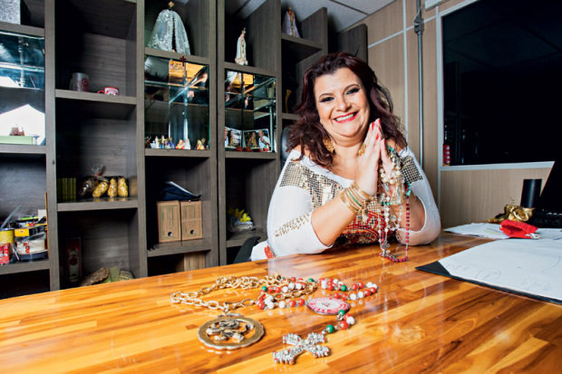

Solange Cruz Bichara Rezende é presidente do G.R.C.E.S. Mocidade Alegre desde abril de 2003. Seu pai, Carlos Augusto Cruz Bichara – já falecido – foi um dos fundadores da agremiação.
Participando das atividades da escola desde criança, já foi passista, destaque, diretora de eventos, locutora oficial e vice-presidente. Com personalidade forte e grande capacidade de liderança e comunicação, fez seu primeiro grande empreendimento na escola em 1996, ao criar o Miscigenação – um grupo de shows temáticos que se apresenta em eventos, convenções, hotéis etc.
Sua gestão, participativa, vem sendo marcada pela transparência, idoneidade e pela valorização e investimento dos sambistas formados dentro da escola. Desta forma, a agremiação vem ganhando credibilidade com diversas parcerias: a Mocidade Alegre hoje é uma das referências em turismo receptivo nas escolas de samba de São Paulo.
Contando com o apoio de todos os integrantes da escola (tanto os profissionais quanto os militantes), a gestão de Solange tem sido marcada por excelentes resultados no carnaval: a escola foi seis vezes campeã (2004, 2007 e 2009, 2012, 2013 e 2014), três vezes vice-campeã (2008,2010 e 2015) e duas vezes terceira colocada (2005 e 2006).

Na responsabilidade social, outro ponto forte da visão empreendedora da presidente, com muitos cursos e oficinas ministrados ao longo dos últimos anos. Os resultados positivos de sua gestão renderam-lhe convites para ministrar palestras em faculdades e empresas, tendo como enfoque a gestão participativa e a motivação das equipes de trabalho.
Seu temperamento dinâmico e otimista, o profundo respeito por todas as agremiações do carnaval e o amor pela sua escola são sintetizados em uma poderosa frase que sela seu compromisso com sua comunidade:
“A Vitória Vem da Luta, a Luta Vem da Força, e a Força… Da união!!!”
– Estou sempre pronta para lutar e defender os interesses de toda minha comunidade é para eles que trabalho.
Sou porta voz de uma legião de 3.500 artistas responsáveis em fazer acontecer o carnaval da Mocidade Alegre no qual exijo muito, mas eles também aprenderam a exigir. E se chegamos a este ponto; Ganhar é uma conseqüência, passar sempre como campeã é nossa obrigação. – Presidente Solange